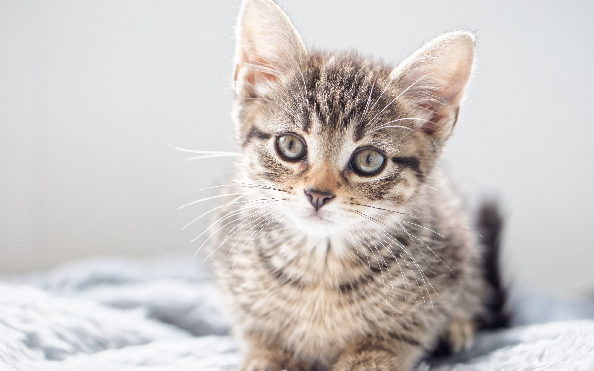
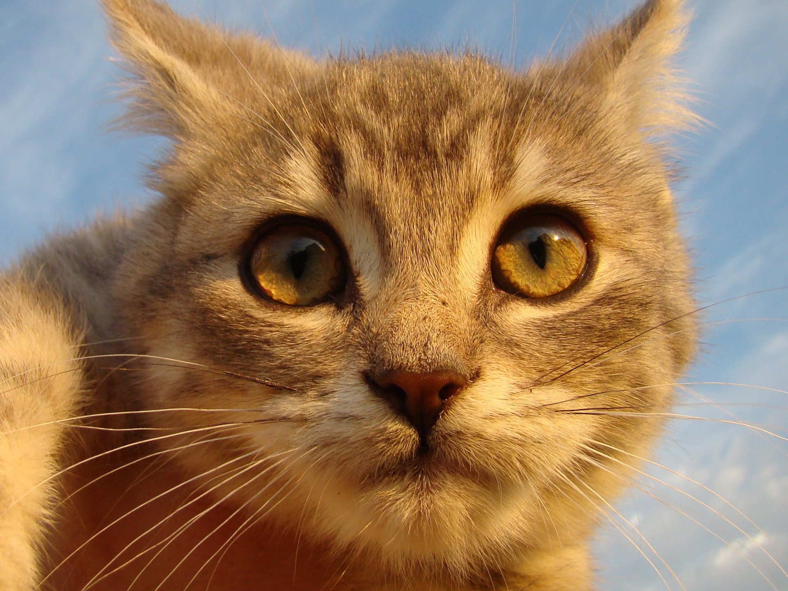
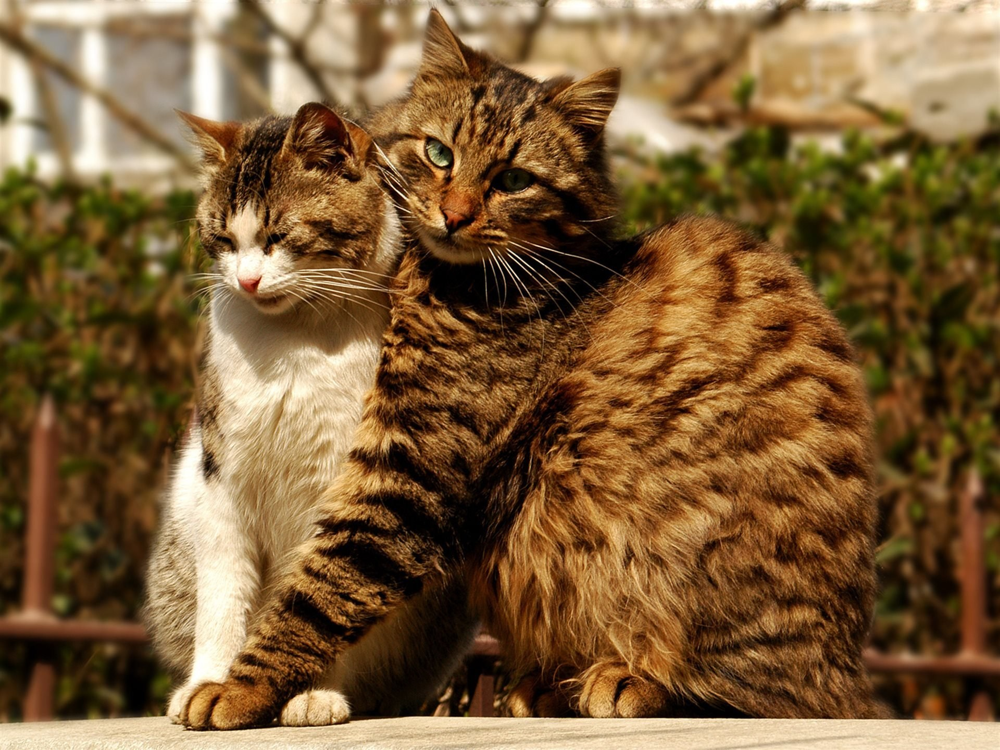
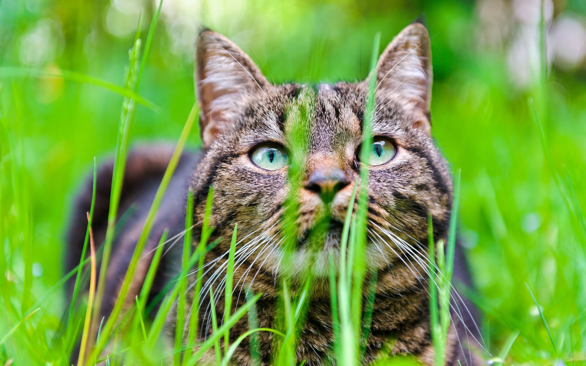

Кошка - домашнее животное, одно из наиболее популярных (наряду с собаками) животных-компаньонов или домашних животных. Кошки - млекопитающие и плотоядные животные.
За способность уничтожать грызунов люди ценят кошек около 10 000 тысяч лет. Являясь одиночным охотником на грызунов и других мелких животных, кошка - социальное животное, использующее для общения широкий диапазон звуковых сигналов, а также феромоны и движения тела.
